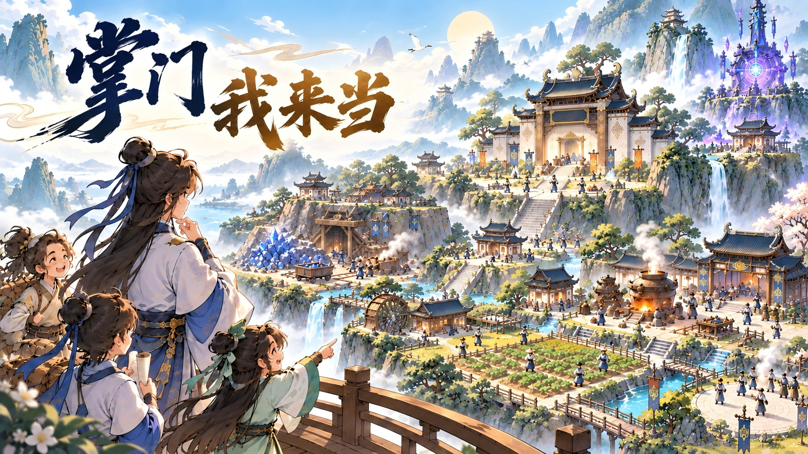
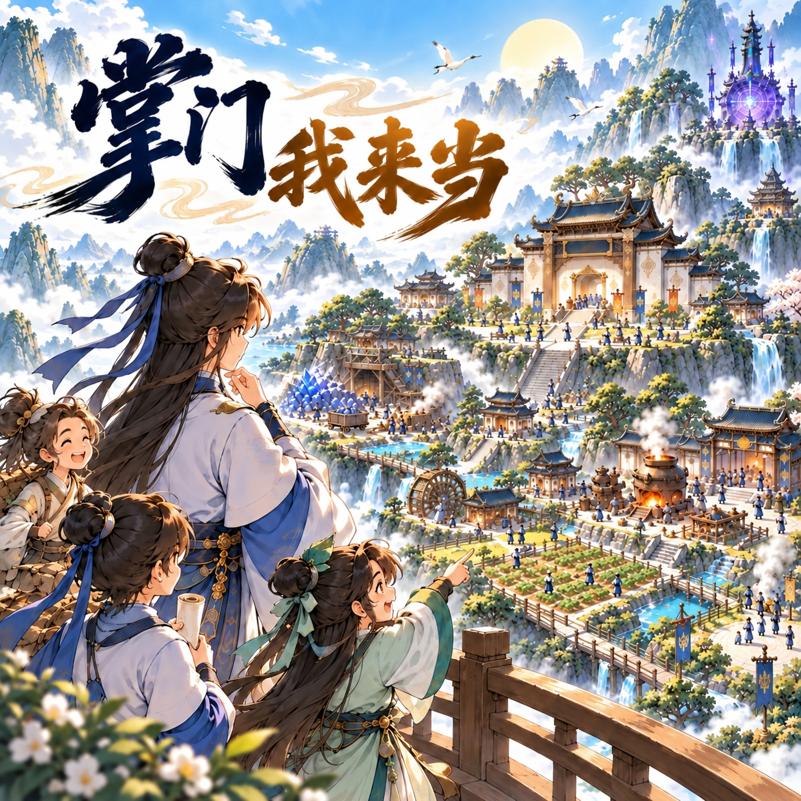

百业兴，山门盛
探灵脉、开灵田、炼丹药。安排弟子各司其职，让资源与建设相互推动，慢慢积累宗门的底气。

招收弟子、经营百业、营造山门。在一砖一瓦与一代代传承中，把初起的宗门，经营成自己的修仙家业。
01 / 游戏特色
探灵脉、开灵田、炼丹药。安排弟子各司其职，让资源与建设相互推动，慢慢积累宗门的底气。
招收弟子，培养骨干，安排授业与分工。每一次境界成长，都成为宗门继续向前的助力。
联结山下各地，规划外务与分院。从守好一方家业，到把传承带向更远的山河。

山门日常 / 岁月成章
经营不是一串孤独的数字。每一项工艺、每一处营造，都会汇入山门日渐丰盛的日常。
02 / 游戏画面
点击图片放大查看
画面来自游戏测试版本，实际内容以游戏内为准。
03 / 游戏影像
点击播放 · 支持全屏观看
TAPTAP / 获取游戏
TapTap 下载入口与二维码将在这里更新，敬请期待。